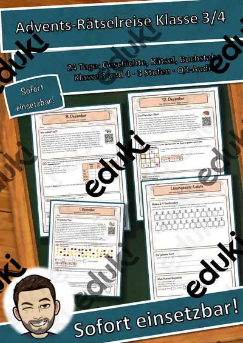
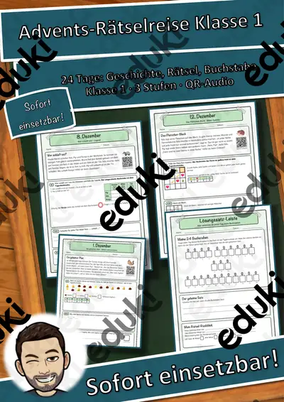
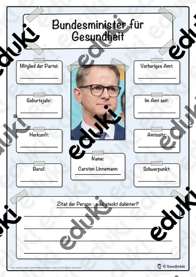
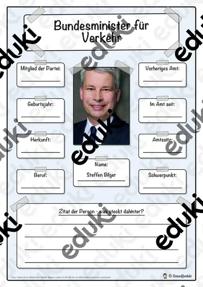
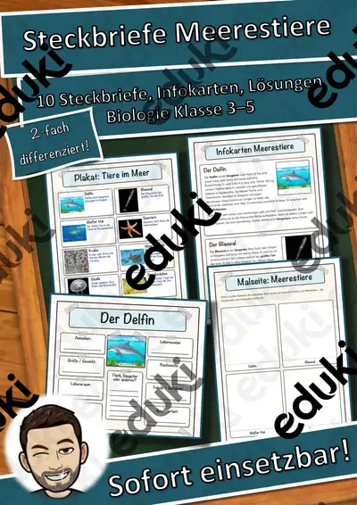
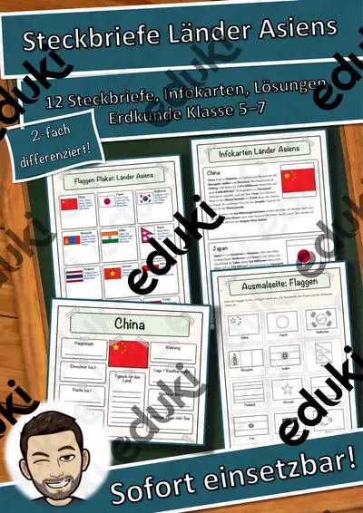
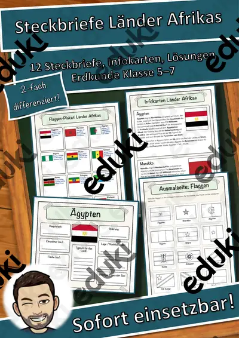
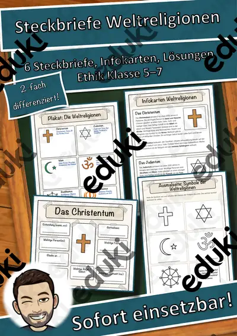
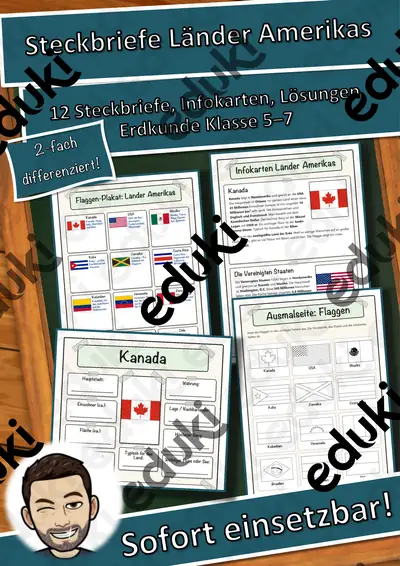
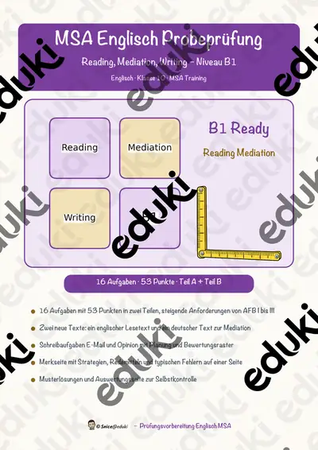

Masken-Werkstatt Formen-Gesichter – Geometrische Gesichter in 3 Stufen (Kunst, Klasse 1–4, Vorlagen + Bausteine)

Würfel-Malspur Fantasie und Abenteuer – Würfeln, Zählen, Malen in 3 Stufen (Vorschule, Klasse 1–2)

Advents-Rätselreise Klasse 3/4 – Adventskalender: 24 Geschichten + Rätsel in 3 Stufen mit Lösungssatz

Würfel-Malspur Herbst und Laternenzeit – Würfeln, Zählen, Malen in 3 Stufen (Vorschule, Klasse 1–2)

Lesespaziergang Tiere im Winter: Pit, der Igel, sucht ein Bett – 8 Stationen in 3 Lesestufen mit Hörfassung (Klasse 1–2, DaZ)

Ziffern-Schreibwerkstatt Ziffern 0 bis 5 auf dem Bauernhof – Spuren, Schreiben, Zählen in 3 Stufen (Vorschule, Klasse 1, DaZ)

Advents-Rätselreise Klasse 2 – Adventskalender: 24 Geschichten + Rätsel in 3 Stufen mit Lösungssatz

Lern-Girlande Weihnachtskugeln – Ausmal-Anhänger mit Lernauftrag in 3 Stufen (Vorschule, Klasse 1–2, DaZ)

Mein Recht im Alltag Mitreden statt zuhören: Mein Recht auf Beteiligung – Alltag den Kinderrechten zuordnen und selbst r

Advents-Rätselreise Klasse 1 – Adventskalender: 24 Geschichten + Rätsel in 3 Stufen mit Lösungssatz

Mein Recht im Alltag Sicher groß werden: Schutz vor Gewalt und meine Privatsphäre – Alltag den Kinderrechten zuordnen un

Mein Recht im Alltag Spielen und Toben im Herbst: Mein Recht auf Freizeit – Alltag den Kinderrechten zuordnen und selbst

Lies und male Weihnachten – Leseverstehen und Ausmalen in 3 Stufen (Klasse 1–2, DaZ, Förder)

Lern-Girlande Laternen – Ausmal-Anhänger mit Lernauftrag in 3 Stufen (Vorschule, Klasse 1–2, DaZ)

Lesespaziergang Laternenzeit: Linas Laterne – 8 Stationen in 3 Lesestufen mit Hörfassung (Klasse 1–2, DaZ)

Lern-Girlande Schneekugeln – Ausmal-Anhänger mit Lernauftrag in 3 Stufen (Vorschule, Klasse 1–2, DaZ)

Laufdiktat Unser Sonnensystem – 15 Sachsätze in 3 Stufen, 3 Lineaturen, Quiz, Hördiktat per QR (Klasse 3–4)
Wuerfelsaetze-Werkstatt Haustiere

Würfel-Malspur Winter und Weihnachten – Würfeln, Zählen, Malen in 3 Stufen (Vorschule, Klasse 1–2)

Bundesminister für Gesundheit - Carsten Linnemann

English-speaking countries – Steckbriefe Englisch (12 Länder mit Flaggen, A2, differenziert, mit Lösungen)

Bundesminister für Verkehr - Steffen Bilger
Steckbriefe Berühmte Bauwerke und Weltwunder – Materialpaket (12 Bauwerke, differenziert, mit Lösungen)

LF 4 Kaufleute für Büromanagement: Rechnungsprüfung und Wareneingangskontrolle – Übungen, Lösungen + Lernvideo

Steckbriefe Schriftstellerinnen und Schriftsteller – Materialpaket (12 Autoren der Literaturgeschichte, differenziert, mit Lösungen)

DaZ-Wortschatz Materialpaket: 6 Wortfelder differenziert A1/A2/B1 – Hörszenen (QR), Lückentexte, Rollenspiele, Sprechkarten

Steckbriefe Meerestiere – Materialpaket (10 Tiere aus dem Meer, differenziert, mit Lösungen)

Steckbriefe Haustiere – Materialpaket (10 Haustiere, differenziert, mit Lösungen)

DaZ-Wortschatz Körper und Gesundheit – differenziert A1/A2/B1: Hörszene (QR), Lückentexte, Rollenspiel

LF 6 Kfz-Mechatroniker/-in: Hochvolt-Sicherheit: Isolationsfehler und Freischaltung – Übungen, Lösungen + Lernvideo

DaZ-Wortschatz Unterwegs in der Stadt – differenziert A1/A2/B1: Hörszene (QR), Lückentexte, Rollenspiel

Steckbriefe Länder Asiens – Materialpaket (12 Länder mit Flaggen, differenziert, mit Lösungen)

DaZ-Wortschatz Mein Zuhause – differenziert A1/A2/B1: Hörszene (QR), Lückentexte, Rollenspiel

Steckbriefe Länder Afrikas – Materialpaket (12 Länder mit Flaggen, differenziert, mit Lösungen)

LF 5 Kfz-Mechatroniker/-in: Verschleißursachen analysieren, Zusatzarbeiten planen – Übungen, Lösungen + Lernvideo

DaZ-Wortschatz Kleidung und Wetter – differenziert A1/A2/B1: Hörszene (QR), Lückentexte, Rollenspiel

Steckbriefe Vögel im Winter – Materialpaket (10 heimische Wintervögel, differenziert, mit Lösungen)

LF 9 Medizinische Fachangestellte: Diabetesbetreuung: Blutzuckermessung und Insulin – Übungen, Lösungen + Lernvideo

DaZ-Wortschatz Essen und Trinken – differenziert A1/A2/B1: Hörszene (QR), Lückentexte, Rollenspiel

LF 8 Medizinische Fachangestellte: Krebsfrüherkennung bei Frau und Mann – Übungen, Lösungen + Lernvideo

DaZ-Wortschatz In der Schule – differenziert A1/A2/B1: Hörszene (QR), Lückentexte, Rollenspiel

Steckbriefe Weltreligionen – Materialpaket (6 Religionen mit Symbolen, Festen und Gotteshäusern, differenziert, mit Lösungen)

Quali Mathematik 9 Probeprüfung Teil A und B mit Lösungen, Mittelschule Bayern

Steckbriefe Länder Amerikas – Materialpaket (12 Länder aus Nord-, Mittel- und Südamerika mit Flaggen, differenziert, mit Lösungen)

MSA Englisch Klasse 10 Probeprüfung: Reading, Mediation, Writing (B1) mit Lösungen

CE 02 Pflegefachfrau/-mann: Dekubitusprophylaxe: Druckgeschwüre erkennen und vermeiden – Übungen, Lösungen + Lernvideo

ESA Mathematik Klasse 9: Probeprüfung mit Alltagsaufgaben, Teil A und B, mit Lösungen

LF 2 Kaufleute für Büromanagement: Prioritäten setzen: Eisenhower und ALPEN im Büro – Übungen, Lösungen + Lernvideo
Keine Materialien gefunden – versuch einen anderen Suchbegriff oder Filter.